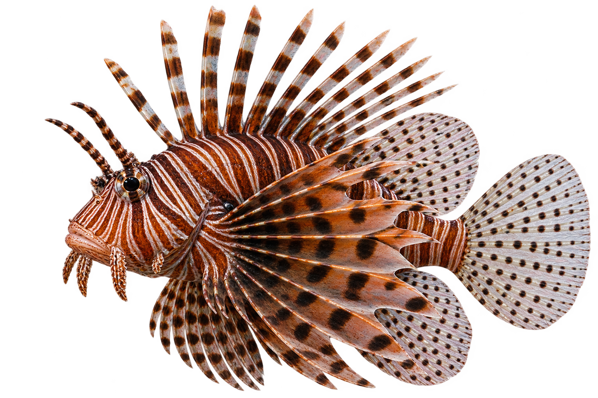
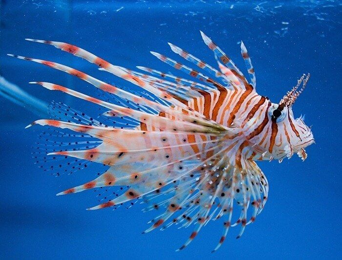
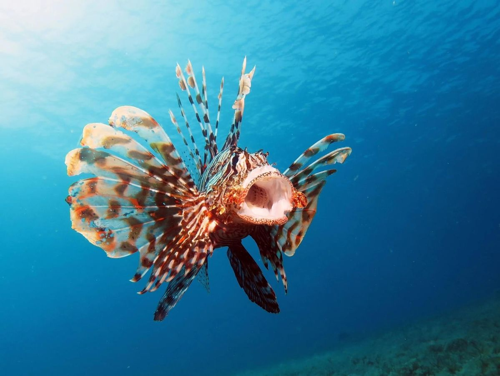
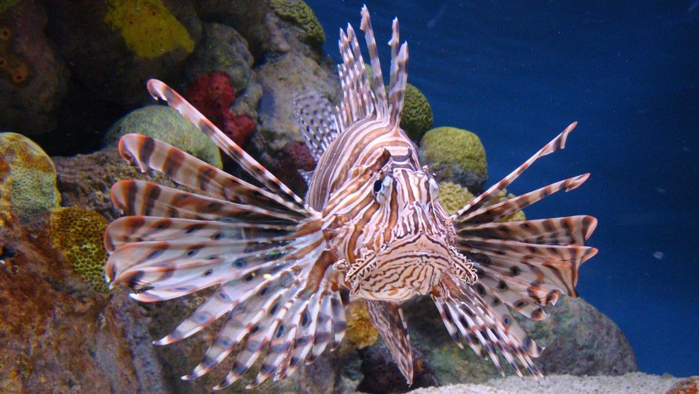

Peixe-Leão
Pterois
O peixe-leão é um peixe marinho conhecido por suas listras e espinhos longos e venenosos.

Curiosidades
Alimentação
Alimenta-se principalmente de pequenos peixes e crustáceos.
Tempo de vida
Pode viver entre 10 e 15 anos na natureza.
Espinhos Venenosos
Possui espinhos com veneno que ajudam a se proteger de predadores.
Nascimento
As fêmeas liberam milhares de ovos na água, que se desenvolvem sem os cuidados dos pais.
Importantes para o ecossistema
Faz parte da cadeia alimentar e ajuda a manter o equilíbrio do ecossistema em seu habitat natural.
Habitat
Vive principalmente em recifes de coral e águas tropicais do Indo-Pacífico.


Você Sabia?
O peixe-leão pode abrir suas grandes nadadeiras para parecer maior e afastar possíveis predadores.
